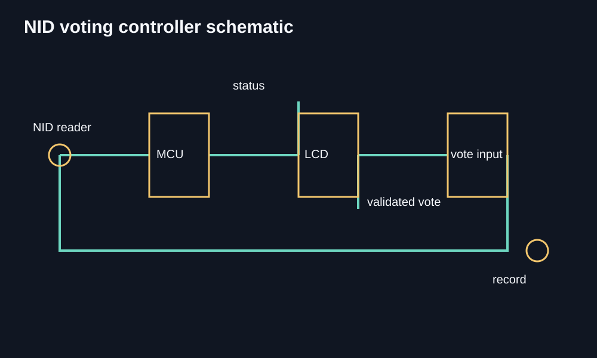

Hello, I am
Hriduan Omor Siam
Final-year EEE student at AIUBVLSI and digital design enthusiastRTL verification learnerElectronics project builder
I build electronics projects and explore digital design through SystemVerilog and hands-on ASIC and FPGA work.

What I am interested in
These are the areas I enjoy exploring and hope to work in.
Featured projects
Open a project to read about the work and explore its images.
 ASIC & FPGA
ASIC & FPGADesign, Synthesis and Comparative Analysis of a Custom FSMD Controller using ASIC and FPGA Technologies
A SystemVerilog FSMD controller explored through Cadence ASIC synthesis and Vivado FPGA implementation.
View details →
Embedded systemDigital Voting Machine
I built an electronic voting machine that scans NID cards and checks voters automatically.
Technical diagrams of the signal path, reader interface, control circuit and verification flow. They document the intended architecture rather than claim to be photographs of the prototype.
View details → Automation
AutomationSmart Agriculture Model
A small farm prototype that brings automatic irrigation together with a food dispenser and RFID access.
Technical diagrams of the irrigation, feeder and RFID subsystems. They describe the electrical relationships without presenting conceptual artwork as physical evidence.
View details → Renewable energy
Renewable energySolar Street Light & Phone Charger
A solar-powered street light with a phone charging point built from basic electronic components.
Technical diagrams of the photovoltaic power path, charger and automatic lamp control. Component relationships are shown for clarity and are not a claim about a photographed prototype.
View details →Let's work and learn together
If you are working on an electronics project or want to talk about chip design I would be happy to hear from you.